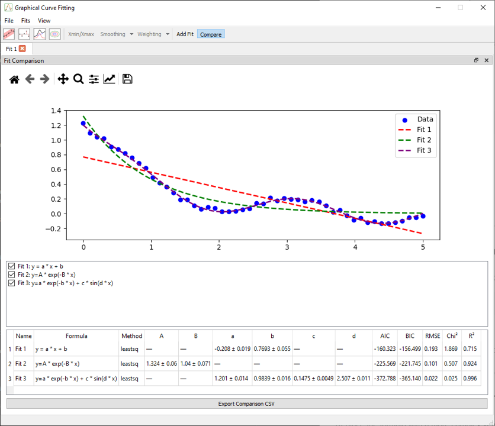

Fitting Comparison – 1D Models
This tutorial demonstrates how to compare multiple candidate models using the fit comparison tool. This feature is designed to help evaluate and visualize which mathematical expression best explains your data.
Step 1 – Load the data
Use File > Load Data and select:
examples/data/fit_comparison_tuto.csv
This dataset contains:
X: the independent variableY: the observed values
It represents a 1D curve with moderate noise and nonlinear behavior.
Step 2 – Add a first model
Go to the Fit Formula dock and enter the following expression:
A * exp(-B * x)
Click Add Fit to save this model for later comparison.
This first model assumes a pure exponential decay.
Step 3 – Add a second model
Replace the formula with a more complex version:
A * exp(-B * x) + C * sin(D * x)
Click Add Fit again.
This second model introduces an oscillatory correction that may better match the residual pattern.
Step 4 – Add a third (invalid) model
Try a deliberately simplistic model:
a * x + b
Click Add Fit once more.
This third model should illustrate a poor fit, helping users see what a mismatch looks like visually and statistically.
Step 5 – View and compare results
Click the Compare button in the toolbar or use the shortcut:
In the comparison dock, you’ll find:
- Overlayed plots of all models and the original data
- Residuals for each model
- Fit quality metrics (e.g. AIC, R², RMSE)
- A table listing parameter values per model

Step 6 – Interpret the outcome
Look for the model that:
- Best visually aligns with the data
- Produces minimal, random-looking residuals
- Has lower AIC or RMSE values
In this case, the second model (exp + sin) should outperform the others.
For a better view, you can click on the checkbox next to the fit to hide it. You can also change the name of the fit by double-clicking on the name of the fit next to the change name chechkbox and pressing enter. This will change the name in the figure legend and in the comparison table.
Notes
- You can add as many models as needed — each remains listed and comparable
- Use the Fit Report dock to examine details per model
- Models can be re-fit or removed at any time from the list